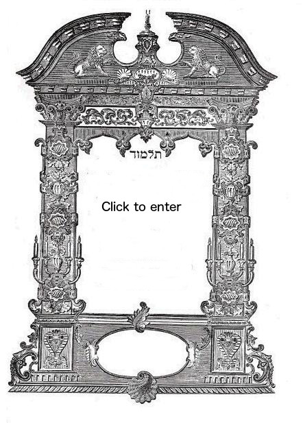

Talmud Page in a Couple Hundred WordsWelcome to the Talmud Illuminated site

This site took seven-and-a-half years to compose. Every day I would
learn a page of the Talmud, in the order of Daf Yomi,
and write a clear,
concise description of the major ideas discussed on that page. The
Talmud covers many areas, from divorce to marriage (in this order),
civil and criminal laws, and Temple service. It also contains many
stories. By now, the project is complete, but I am still working on
improvements. This is my fifth time learning through the Talmud.
How long did it take me? Say, 2 hours every day, for 7 years, 2711 pages. About 6000 hours. Billed at $150/h, it would be close to a million dollars.
So it is a wealth of information in a literal sense.
About myself. My name is Mark Kerzner, I live in Houston, TX, I am married with six children, and I have a cat and a dog
fish. I am a full-time software developer and trainer in Big Data, and
part-time many other things, such as learning the Talmud.
Why Talmud Illuminated?
I want to open this knowledge to anybody who wants it. Let us
say someone wants to know about Kiddushin (Jewish marriage). She can
take the excellent editions Steinzalts or Artscroll,
editions and study all of the eighty-two pages. This will take eighty-two hours
or more, depending on the level of preparedness. Or she can get the
general idea by reading the pages on the Talmud Illuminated site, and
then go ahead and deepen that knowledge.
Each page is described in about two hundred words. It is illustrated
with a lovingly selected painting from world art. It can serve as a
knowledge journey, an art journey or both. You can subscribe to daily
emails, and after seven years of reading one page a day, become a "maven."
Why study the Talmud?
I had two reasons. First, I wanted to have the knowledge. Second, learning is an excellent mental gymnastics. When I started a
while back, my idea was: "I am reasonably astute today, but what will
be when I grow older? Let me engage in daily learning, and see
what happens later." I am still doing it.